# Sets the repository to download packages from
options(repos = list(CRAN = "http://cran.rstudio.com/"))
# Sets the number of significant figures to two - e.g., 0.01
options(digits = 2)
# Required package for quick package downloading and loading
install.packages("pacman")
pacman::p_load(colorblindr, # Colorblind friendly pallettes
cluster, # K cluster analyses
dlookr, # Exploratory data analysis
formattable, # HTML tables from R outputs
ggfortify, # Plotting tools for stats
ggpubr, # Publishable ggplots
here, # Standardizes paths to data
kableExtra, # Alternative to formattable
knitr, # Needed to write HTML reports
missRanger, # To generate NAs
plotly, # Visualization package
rattle, # Decision tree visualization
rpart, # rpart algorithm
tidyverse, # Powerful data wrangling package suite
visdat) # Another EDA visualization package
# Set global ggplot() theme
# Theme pub_clean() from the ggpubr package with base text size = 16
theme_set(theme_pubclean(base_size = 16))
# All axes titles to their respective far right sides
theme_update(axis.title = element_text(hjust = 1))
# Remove axes ticks
theme_update(axis.ticks = element_blank())
# Remove legend key
theme_update(legend.key = element_blank())Exploratory Data Analysis in R - Imputing like a Data Scientist
Purpose of Workshop
Exploring, visualizing, and imputing outliers and missing values (NAs) in a novel data set and produce publication quality graphs and tables
Objectives
- Load and explore a data set with publication quality tables
- Thoroughly diagnose outliers and missing values
- Impute outliers and missing values
Required Setup
We first need to prepare our environment with the necessary packages and set a global theme for publishable plots in ggplot()
Load and Examine a Data Set
# Let's load a data set from the diabetes data set
dataset <- read.csv(here("Data7_EDA_In_R_Book", "data", "diabetes.csv")) |>
# Add a categorical group
mutate(Age_group = ifelse(Age >= 21 & Age <= 30, "Young",
ifelse(Age > 30 & Age <=50, "Middle",
"Elderly")),
Age_group = fct_rev(Age_group))
# What does the data look like?
dataset |>
head() |>
formattable()| Pregnancies | Glucose | BloodPressure | SkinThickness | Insulin | BMI | DiabetesPedigreeFunction | Age | Outcome | Age_group |
|---|---|---|---|---|---|---|---|---|---|
| 6 | 148 | 72 | 35 | 0 | 34 | 0.63 | 50 | 1 | Middle |
| 1 | 85 | 66 | 29 | 0 | 27 | 0.35 | 31 | 0 | Middle |
| 8 | 183 | 64 | 0 | 0 | 23 | 0.67 | 32 | 1 | Middle |
| 1 | 89 | 66 | 23 | 94 | 28 | 0.17 | 21 | 0 | Young |
| 0 | 137 | 40 | 35 | 168 | 43 | 2.29 | 33 | 1 | Middle |
| 5 | 116 | 74 | 0 | 0 | 26 | 0.20 | 30 | 0 | Young |
Diagnose your Data
# What are the properties of the data
dataset |>
diagnose() |>
formattable()| variables | types | missing_count | missing_percent | unique_count | unique_rate |
|---|---|---|---|---|---|
| Pregnancies | integer | 0 | 0 | 17 | 0.0221 |
| Glucose | integer | 0 | 0 | 136 | 0.1771 |
| BloodPressure | integer | 0 | 0 | 47 | 0.0612 |
| SkinThickness | integer | 0 | 0 | 51 | 0.0664 |
| Insulin | integer | 0 | 0 | 186 | 0.2422 |
| BMI | numeric | 0 | 0 | 248 | 0.3229 |
| DiabetesPedigreeFunction | numeric | 0 | 0 | 517 | 0.6732 |
| Age | integer | 0 | 0 | 52 | 0.0677 |
| Outcome | integer | 0 | 0 | 2 | 0.0026 |
| Age_group | factor | 0 | 0 | 3 | 0.0039 |
variables: name of each variabletypes: data type of each variablemissing_count: number of missing valuesmissing_percent: percentage of missing valuesunique_count: number of unique valuesunique_rate: rate of unique value - unique_count / number of observations
Diagnose Outliers
There are several numerical variables that have outliers above, let’s see what the data look like with and without them
Create a table with columns containing outliers
Plot outliers in a box plot and histogram
# Table showing outliers
dataset |>
diagnose_outlier() |>
filter(outliers_ratio > 0) |>
mutate(rate = outliers_mean / with_mean) |>
arrange(desc(rate)) |>
select(-outliers_cnt) variables outliers_ratio outliers_mean with_mean without_mean
1 Insulin 4.43 457.0 79.80 62.33
2 SkinThickness 0.13 99.0 20.54 20.43
3 Pregnancies 0.52 15.0 3.85 3.79
4 DiabetesPedigreeFunction 3.78 1.5 0.47 0.43
5 Age 1.17 70.0 33.24 32.81
6 BMI 2.47 23.7 31.99 32.20
7 BloodPressure 5.86 19.2 69.11 72.21
8 Glucose 0.65 0.0 120.89 121.69
rate
1 5.73
2 4.82
3 3.90
4 3.27
5 2.11
6 0.74
7 0.28
8 0.00# Boxplots and histograms of data with and without outliers
dataset |>
select(find_outliers(dataset)) |>
plot_outlier()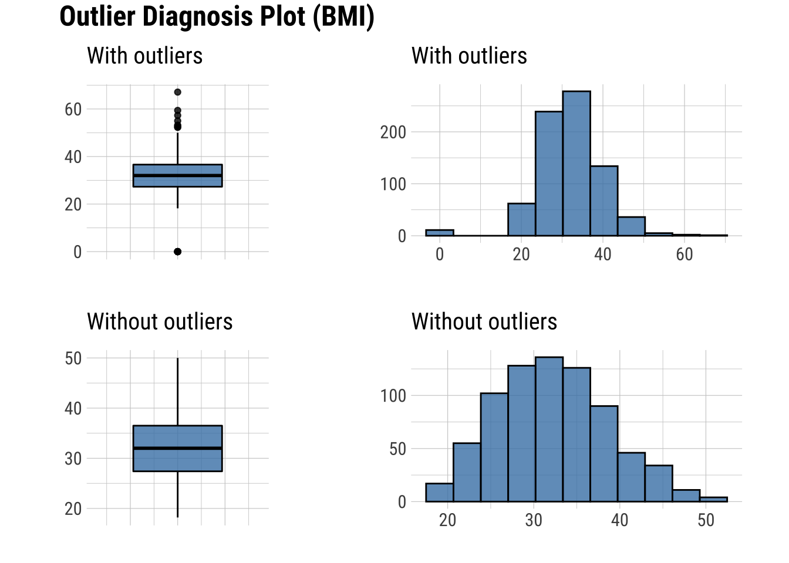
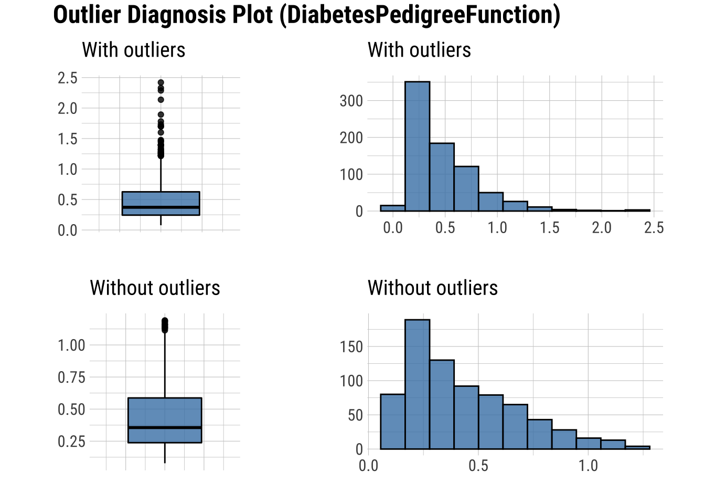
Basic Exploration of Missing Values (NAs)
- Table showing the extent of NAs in columns containing them
# Randomly generate NAs for 30
na.dataset <- dataset |>
generateNA(p = 0.3)
# First six rows
na.dataset |>
head() |>
formattable()| Pregnancies | Glucose | BloodPressure | SkinThickness | Insulin | BMI | DiabetesPedigreeFunction | Age | Outcome | Age_group |
|---|---|---|---|---|---|---|---|---|---|
| 6 | NA | NA | 35 | 0 | 34 | NA | 50 | NA | Middle |
| 1 | NA | 66 | 29 | 0 | NA | NA | 31 | 0 | Middle |
| 8 | NA | 64 | 0 | NA | 23 | 0.67 | 32 | 1 | NA |
| 1 | NA | NA | NA | 94 | 28 | 0.17 | NA | NA | Young |
| 0 | NA | NA | 35 | NA | 43 | 2.29 | 33 | 1 | Middle |
| 5 | 116 | 74 | 0 | 0 | NA | NA | NA | 0 | NA |
# Create the NA table
na.dataset |>
plot_na_pareto(only_na = TRUE, plot = FALSE) |>
formattable() # Publishable table| variable | frequencies | ratio | grade | cumulative |
|---|---|---|---|---|
| Age | 230 | 0.3 | Bad | 10 |
| Age_group | 230 | 0.3 | Bad | 20 |
| BloodPressure | 230 | 0.3 | Bad | 30 |
| BMI | 230 | 0.3 | Bad | 40 |
| DiabetesPedigreeFunction | 230 | 0.3 | Bad | 50 |
| Glucose | 230 | 0.3 | Bad | 60 |
| Insulin | 230 | 0.3 | Bad | 70 |
| Outcome | 230 | 0.3 | Bad | 80 |
| Pregnancies | 230 | 0.3 | Bad | 90 |
| SkinThickness | 230 | 0.3 | Bad | 100 |
- Plots showing the frequency of missing values
# Plot the insersect of the columns with missing values
# This plot visualizes the table above
na.dataset |>
plot_na_pareto(only_na = TRUE)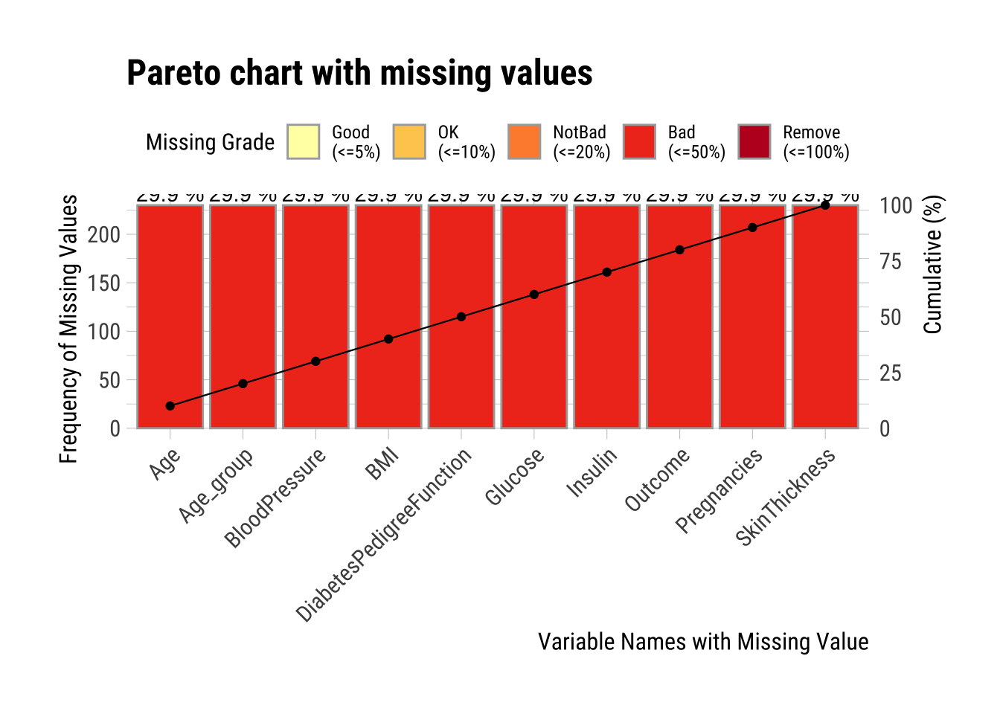
Advanced Exploration of Missing Values (NAs)
- Intersect plot that shows, for every combination of columns relevant, how many missing values are common
- Orange boxes are the columns in question
- x axis (top green bar plots) show the number of missing values in that column
- y axis (right green bars) show the number of missing values in the columns in orange blocks
# Plot the insersect of the 5 columns with the most missing values
# This means that some combinations of columns have missing values in the same row
na.dataset |>
select(BloodPressure, Glucose, Age) |>
plot_na_intersect(only_na = TRUE) 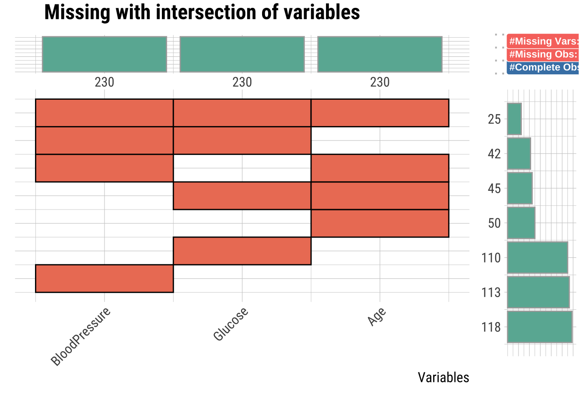
Determining if NA Observations are the Same
- Missing values can be the same observation across several columns, this is not shown above
- The visdat package can solve this with the
vis_miss()function which shows the rows with missing values throughggplotly() - Here we will show ALL columns with NAs, and you can zoom into individual rows (interactive plot)
- NOTE: This line will make the HTML rendering take a while…
# Interactive plotly() plot of all NA values to examine every row
na.dataset |>
select(BloodPressure, Glucose, Age) |>
vis_miss() |>
ggplotly() Impute Outliers and NAs
Removing outliers and NAs can be tricky, but there are methods to do so. I will go over several, and discuss benefits and costs to each.
The principle goal for all imputation is to find the method that does not change the distribution too much (or oddly).
NOTE: imputation should only be used when missing data is unavoidable and probably limited to 10% of your data being outliers / missing data (though some argue imputation is necessary between 30-60%). Ask what the cause is for the outlier and missing data.
Classifying Outliers
Before imputing outliers, you will want to diagnose whether it’s they are natural outliers or not. We will not be looking at “Insulin” for example across Age_group, because there are several NAs, which we will impute below.
# Box plot
dataset %>% # Set the simulated normal data as a data frame
ggplot(aes(x = Insulin, y = Age_group, fill = Age_group)) + # Create a ggplot
geom_boxplot(width = 0.5, outlier.size = 2, outlier.alpha = 0.5) +
xlab("Insulin (mg/dL)") + # Relabel the x axis label
ylab("Age group") + # Remove the y axis label
scale_fill_OkabeIto() + # Change the color scheme for the fill criteria
theme(legend.position = "none") # Remove the legend 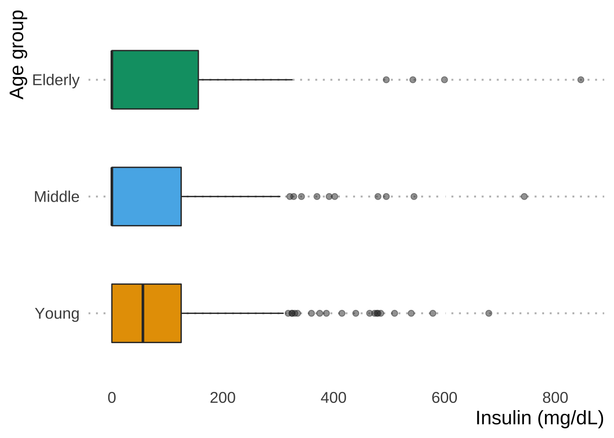
Now let’s say that we want to impute extreme values and remove outliers that don’t make sense, such as Insulin levels > 600 mg/dL: values greater than this induce a diabetic coma.
We remove outliers using imputate_outlier() and replace them with values that are estimates based on the existing data
mean: arithmetic meanmedian: medianmode: modecapping: Impute the upper outliers with 95 percentile, and impute the bottom outliers with 5 percentile - aka Winsorizing
Mean Imputation
The mean of the observed values for each variable is computed and the outliers for that variable are imputed by this mean
# Raw summary, output suppressed
mean_out_imp_insulin <- dataset |>
select(Insulin) |>
filter(Insulin < 600) |>
imputate_outlier(Insulin, method = "mean")
# Output showing the summary statistics of our imputation
mean_out_imp_insulin |>
summary()# Visualization of the mean imputation
mean_out_imp_insulin |>
plot()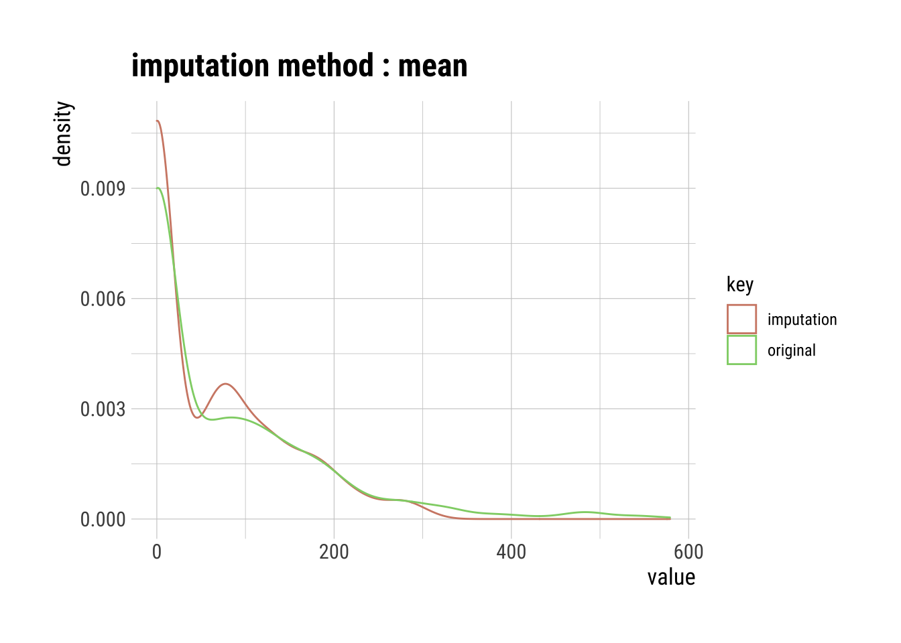
Median Imputation
The median of the observed values for each variable is computed and the outliers for that variable are imputed by this median
# Raw summary, output suppressed
med_out_imp_insulin <- dataset |>
select(Insulin) |>
filter(Insulin < 600) |>
imputate_outlier(Insulin, method = "median")
# Output showing the summary statistics of our imputation
med_out_imp_insulin |>
summary()Impute outliers with median
* Information of Imputation (before vs after)
Original Imputation
described_variables "value" "value"
n "764" "764"
na "0" "0"
mean "76" "60"
sd "106" " 77"
se_mean "3.8" "2.8"
IQR "126" "110"
skewness "1.8" "1.1"
kurtosis "3.90" "0.35"
p00 "0" "0"
p01 "0" "0"
p05 "0" "0"
p10 "0" "0"
p20 "0" "0"
p25 "0" "0"
p30 "0" "0"
p40 "0" "0"
p50 "24" "24"
p60 "71" "56"
p70 "105" " 92"
p75 "126" "110"
p80 "147" "130"
p90 "207" "180"
p95 "285" "215"
p99 "482" "284"
p100 "579" "310" # Visualization of the median imputation
med_out_imp_insulin |>
plot()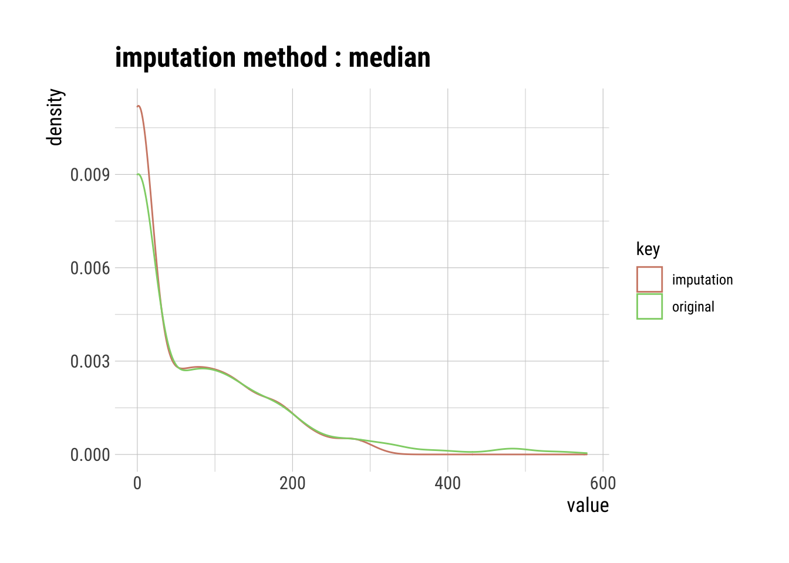
Pros & Cons of Using the Mean or Median Imputation
Pros:
- Easy and fast.
- Works well with small numerical datasets.
Cons:
- Doesn’t factor the correlations between features. It only works on the column level.
- Will give poor results on encoded categorical features (do NOT use it on categorical features).
- Not very accurate.
- Doesn’t account for the uncertainty in the imputations.
Mode Imputation
The mode of the observed values for each variable is computed and the outliers for that variable are imputed by this mode
# Raw summary, output suppressed
mode_out_imp_insulin <- dataset |>
select(Insulin) |>
filter(Insulin < 600) |>
imputate_outlier(Insulin, method = "mode")
# Output showing the summary statistics of our imputation
mode_out_imp_insulin |>
summary()Impute outliers with mode
* Information of Imputation (before vs after)
Original Imputation
described_variables "value" "value"
n "764" "764"
na "0" "0"
mean "76" "59"
sd "106" " 78"
se_mean "3.8" "2.8"
IQR "126" "110"
skewness "1.8" "1.1"
kurtosis "3.90" "0.32"
p00 "0" "0"
p01 "0" "0"
p05 "0" "0"
p10 "0" "0"
p20 "0" "0"
p25 "0" "0"
p30 "0" "0"
p40 "0" "0"
p50 "24" " 0"
p60 "71" "56"
p70 "105" " 92"
p75 "126" "110"
p80 "147" "130"
p90 "207" "180"
p95 "285" "215"
p99 "482" "284"
p100 "579" "310" # Visualization of the mode imputation
mode_out_imp_insulin |>
plot()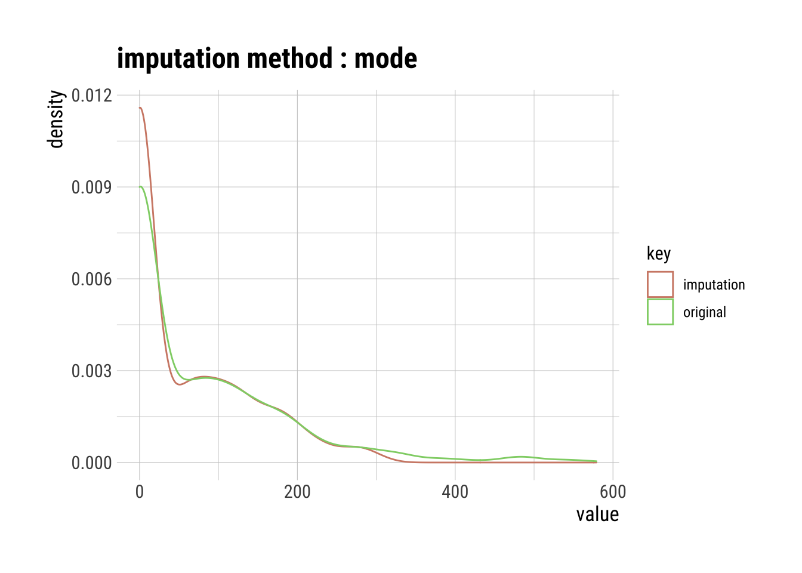
Pros & Cons of Using the Mode Imputation
Pros:
- Works well with categorical features.
Cons:
It also doesn’t factor the correlations between features.
It can introduce bias in the data.
Capping Imputation (aka Winsorizing)
The Percentile Capping is a method of Imputing the outlier values by replacing those observations outside the lower limit with the value of 5th percentile and those that lie above the upper limit, with the value of 95th percentile of the same dataset.
# Raw summary, output suppressed
cap_out_imp_insulin <- dataset |>
select(Insulin) |>
filter(Insulin < 600) |>
imputate_outlier(Insulin, method = "capping")
# Output showing the summary statistics of our imputation
cap_out_imp_insulin |>
summary()Impute outliers with capping
* Information of Imputation (before vs after)
Original Imputation
described_variables "value" "value"
n "764" "764"
na "0" "0"
mean "76" "71"
sd "106" " 89"
se_mean "3.8" "3.2"
IQR "126" "126"
skewness "1.8" "1.1"
kurtosis "3.895" "0.017"
p00 "0" "0"
p01 "0" "0"
p05 "0" "0"
p10 "0" "0"
p20 "0" "0"
p25 "0" "0"
p30 "0" "0"
p40 "0" "0"
p50 "24" "24"
p60 "71" "71"
p70 "105" "105"
p75 "126" "126"
p80 "147" "147"
p90 "207" "207"
p95 "285" "285"
p99 "482" "285"
p100 "579" "310" # Visualization of the capping imputation
cap_out_imp_insulin |>
plot()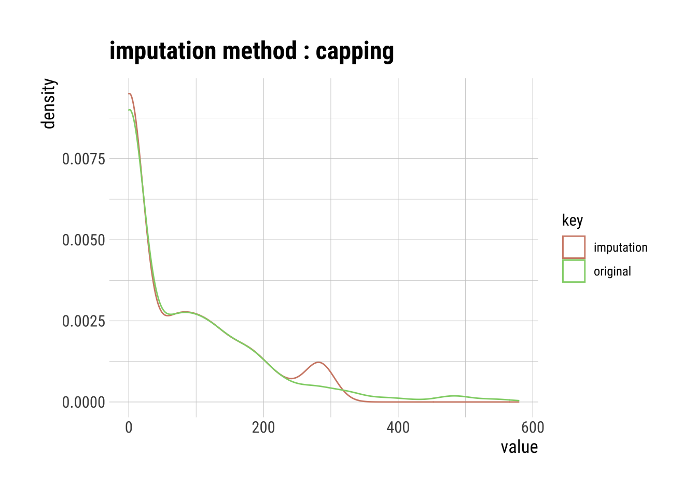
Pros and Cons of Capping
Pros:
- Not influenced by extreme values
Cons:
Capping only modifies the smallest and largest values slightly. This is generally not a good idea since it means we’re just modifying data values for the sake of modifications.
If no extreme outliers are present, Winsorization may be unnecessary.
Imputing NAs
I will only be addressing one type of NA imputation using imputate_na() (but note you can use mean, median, and mode as well):
knn: K-nearest neighbors (KNN)rpart: Recursive Partitioning and Regression Trees (rpart)mice: Multivariate Imputation by Chained Equations (MICE)
Since our normal dataset has no NA values, we will use the na.dataset we created earlier.
K-Nearest Neighbor (KNN) Imputation
KNN is a machine learning algorithm that classifies data by similarity. This in effect clusters data into similar groups. The algorithm predicts values of new data to replace NA values based on how closely they resembles training data points, such as by comparing across other columns.
Here’s a visual example using the clara() function from the cluster package to run a KNN algorithm on our dataset, where three clusters are created by the algorithm.
# KNN plot of our dataset without categories
autoplot(clara(dataset[-5], 3)) +
scale_color_OkabeIto()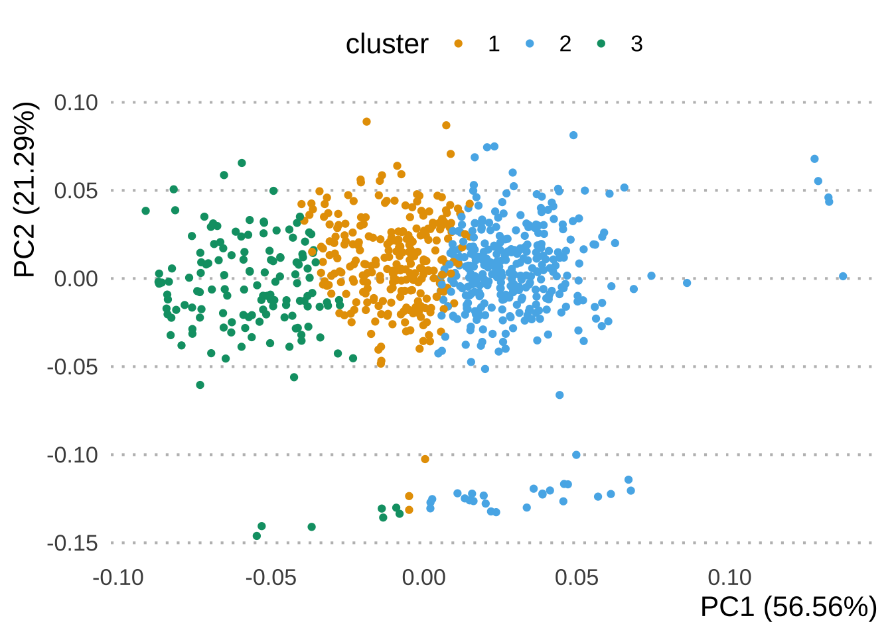
# Raw summary, output suppressed
knn_na_imp_insulin <- na.dataset |>
imputate_na(Insulin, method = "knn")
# Plot showing the results of our imputation
knn_na_imp_insulin |>
plot()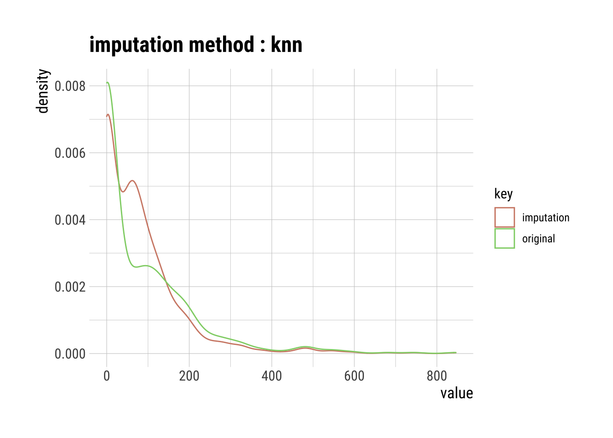
Pros & Cons of Using KNN Imputation
Pro:
- Possibly much more accurate than mean, median, or mode imputation for some data sets.
Cons:
KNN is computationally expensive because it stores the entire training dataset into computer memory.
KNN is very sensitive to outliers, so you would have to imputate these first.
Recursive Partitioning and Regression Trees (rpart)
rpart is a decision tree machine learning algorithm that builds classification or regression models through a two stage process, which can be thought of as binary trees. The algorithm splits the data into subsets, which move down other branches of the tree until a termination criteria is reached.
For example, if we are missing a value for Age_group a first decision could be whether the associated Age is within a series of yes or no criteria
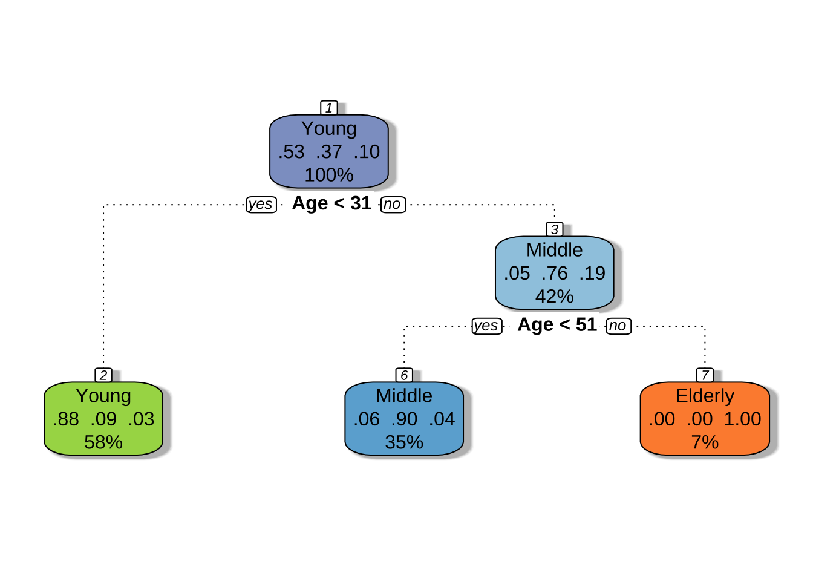
# Raw summary, output suppressed
rpart_na_imp_insulin <- na.dataset |>
imputate_na(Insulin, method = "rpart")
# Plot showing the results of our imputation
rpart_na_imp_insulin |>
plot()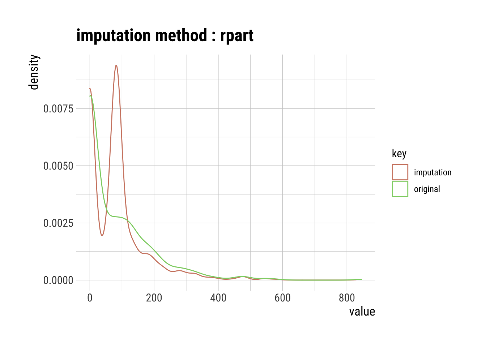
Pros & Cons of Using rpart Imputation
Pros:
Good for categorical data because approximations are easier to compare across categories than continuous variables.
Not sensitive to outliers.
Cons:
Can over fit the data as they grow.
Speed decreases with more data columns.
Multivariate Imputation by Chained Equations (MICE)
MICE is an algorithm that fills missing values multiple times, hence dealing with uncertainty better than other methods. This approach creates multiple copies of the data that can then be analyzed and then pooled into a single dataset.

# Raw summary, output suppressed
mice_na_imp_insulin <- na.dataset |>
imputate_na(Insulin, method = "mice")
iter imp variable
1 1 Pregnancies Glucose BloodPressure SkinThickness Insulin BMI DiabetesPedigreeFunction Age Outcome Age_group
1 2 Pregnancies Glucose BloodPressure SkinThickness Insulin BMI DiabetesPedigreeFunction Age Outcome Age_group
1 3 Pregnancies Glucose BloodPressure SkinThickness Insulin BMI DiabetesPedigreeFunction Age Outcome Age_group
1 4 Pregnancies Glucose BloodPressure SkinThickness Insulin BMI DiabetesPedigreeFunction Age Outcome Age_group
1 5 Pregnancies Glucose BloodPressure SkinThickness Insulin BMI DiabetesPedigreeFunction Age Outcome Age_group
2 1 Pregnancies Glucose BloodPressure SkinThickness Insulin BMI DiabetesPedigreeFunction Age Outcome Age_group
2 2 Pregnancies Glucose BloodPressure SkinThickness Insulin BMI DiabetesPedigreeFunction Age Outcome Age_group
2 3 Pregnancies Glucose BloodPressure SkinThickness Insulin BMI DiabetesPedigreeFunction Age Outcome Age_group
2 4 Pregnancies Glucose BloodPressure SkinThickness Insulin BMI DiabetesPedigreeFunction Age Outcome Age_group
2 5 Pregnancies Glucose BloodPressure SkinThickness Insulin BMI DiabetesPedigreeFunction Age Outcome Age_group
3 1 Pregnancies Glucose BloodPressure SkinThickness Insulin BMI DiabetesPedigreeFunction Age Outcome Age_group
3 2 Pregnancies Glucose BloodPressure SkinThickness Insulin BMI DiabetesPedigreeFunction Age Outcome Age_group
3 3 Pregnancies Glucose BloodPressure SkinThickness Insulin BMI DiabetesPedigreeFunction Age Outcome Age_group
3 4 Pregnancies Glucose BloodPressure SkinThickness Insulin BMI DiabetesPedigreeFunction Age Outcome Age_group
3 5 Pregnancies Glucose BloodPressure SkinThickness Insulin BMI DiabetesPedigreeFunction Age Outcome Age_group
4 1 Pregnancies Glucose BloodPressure SkinThickness Insulin BMI DiabetesPedigreeFunction Age Outcome Age_group
4 2 Pregnancies Glucose BloodPressure SkinThickness Insulin BMI DiabetesPedigreeFunction Age Outcome Age_group
4 3 Pregnancies Glucose BloodPressure SkinThickness Insulin BMI DiabetesPedigreeFunction Age Outcome Age_group
4 4 Pregnancies Glucose BloodPressure SkinThickness Insulin BMI DiabetesPedigreeFunction Age Outcome Age_group
4 5 Pregnancies Glucose BloodPressure SkinThickness Insulin BMI DiabetesPedigreeFunction Age Outcome Age_group
5 1 Pregnancies Glucose BloodPressure SkinThickness Insulin BMI DiabetesPedigreeFunction Age Outcome Age_group
5 2 Pregnancies Glucose BloodPressure SkinThickness Insulin BMI DiabetesPedigreeFunction Age Outcome Age_group
5 3 Pregnancies Glucose BloodPressure SkinThickness Insulin BMI DiabetesPedigreeFunction Age Outcome Age_group
5 4 Pregnancies Glucose BloodPressure SkinThickness Insulin BMI DiabetesPedigreeFunction Age Outcome Age_group
5 5 Pregnancies Glucose BloodPressure SkinThickness Insulin BMI DiabetesPedigreeFunction Age Outcome Age_group# Plot showing the results of our imputation
mice_na_imp_insulin |>
plot()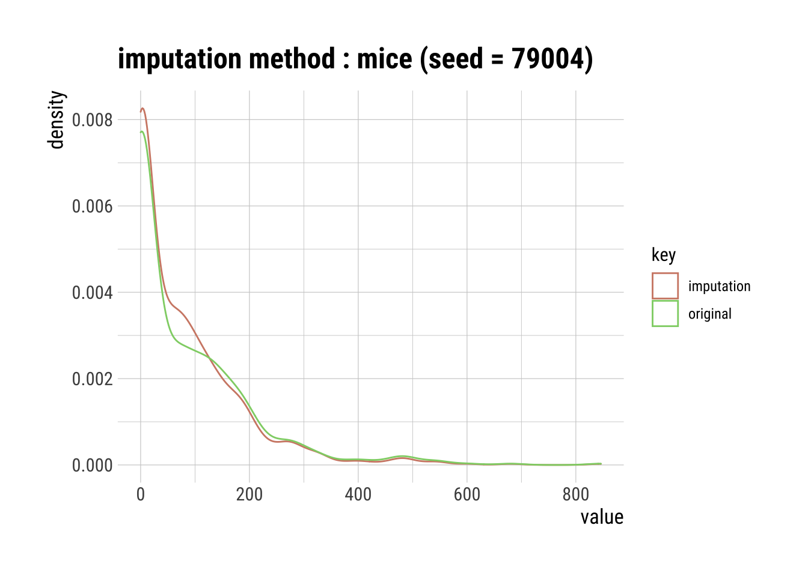
Pros & Cons of MICE Imputation
Pros:
Multiple imputations are more accurate than a single imputation.
The chained equations are very flexible to data types, such as categorical and ordinal.
Cons:
- You have to round the results for ordinal data because resulting data points are too great or too small (floating-points).
Produce an HTML Transformation Summary
# Remove the '#' below to reproduce an HTML from an R script.
# transformation_web_report(dataset)